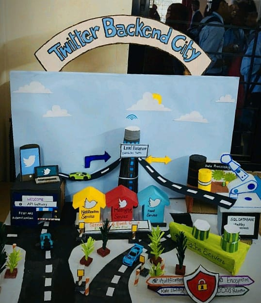
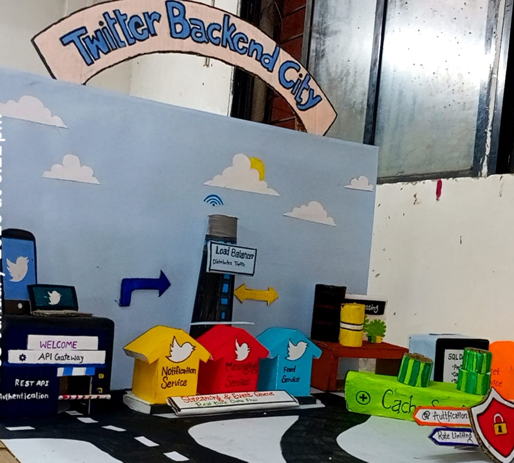
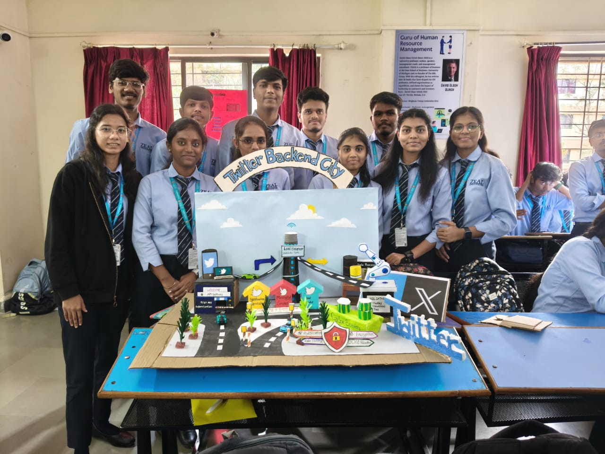
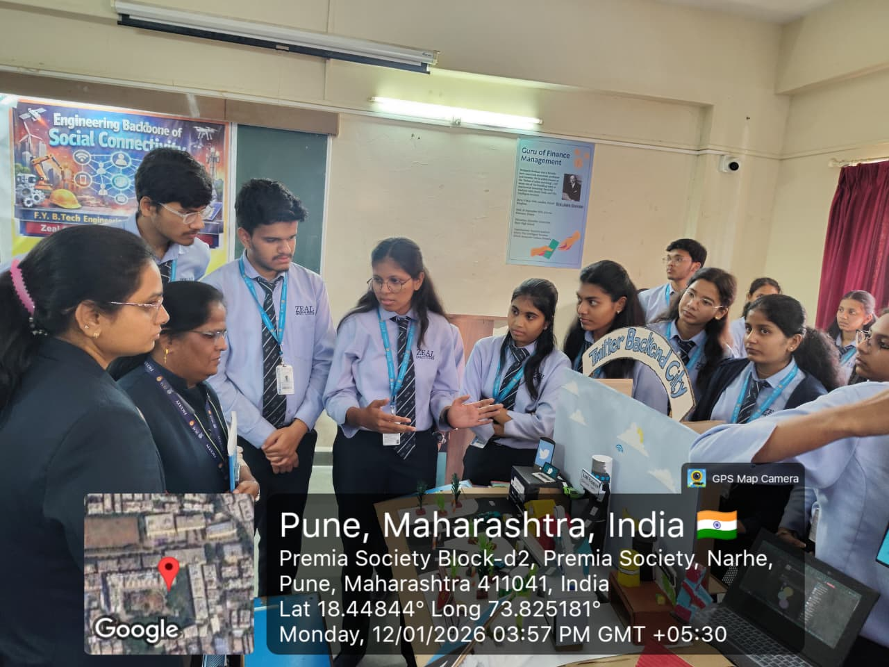
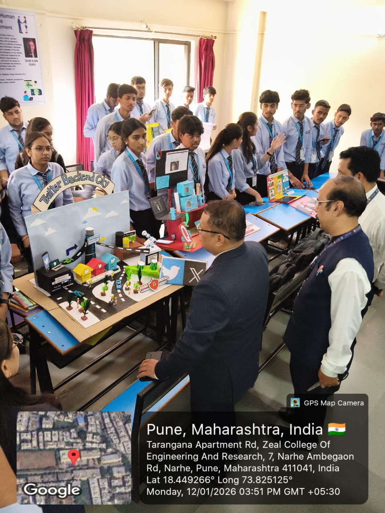

A real-world translation of microservice web topologies modeled into cardboard layouts. Scaled to handle millions of transactions, this model bridges theoretical software concepts into three-dimensional logical components.
Use the console toggle on the right to compare the digital architectural blueprints directly with your physical cardboard model design.

● Actual Physical Model representation showing components matching the interactive blueprint map.
Adjust the overall incoming traffic request slider to visualize how Twitter Backend City scales its memory structures and buffer components under dynamic workloads.
Exploring the 14 structural blueprints making up our backend city's execution grid.
The grand checkpoint of Twitter Backend City. It intercepts incoming client traffic, certificates TLS, runs rate limiting, and forwards paths securely.
Verifies users' digital fingerprints, secure login sessions, and validates asymmetric JWT keys prior to admitting downstream resource access.
Distributes high load across multiple operational server groups. Uses modern hashing algorithms to balance incoming network flows perfectly.
Directs incoming system write operations. Spawns custom tweet payloads, assigns unique Snowflake IDs, and commits metadata down pipelines.
Powers user home timelines. Reads structures aggressively from fast operational cache systems, performing critical fanouts for optimal performance.
Handles instant Direct Messages over bi-directional connections, maintaining lightweight sockets for fast deliveries between user profiles.
Triggers instant alerts to millions of remote hardware targets. Coordinates system actions, mentions, and follows safely.
Stores pre-computed timelines and session metadata directly inside RAM chips. Eliminates costly direct queries to permanent databases.
The ultimate system of record. Highly sharded, horizontally replicated table spaces designed to guarantee permanent data storage.
Absorbs immense asynchronous write traffic, acting as an event-driven buffer stream prior to writing data blocks to the hard disks.
Shields structures from network threats. Intercepts layer 7 DDoS waves, monitors web protocols, and drops rogue connections quickly.
Scales computational capacity dynamically. Spins up thousands of virtualized server containers in response to high user engagement.
The clients that trigger requests. They cache localized content and build secure handshake pipelines with the core backend services.
The aggregate system where services interact. Relies on service registries and telemetry collection to maintain a healthy data ecosystem.
When a celebrity user with 100 million followers posts a tweet, writing that tweet immediately to 100 million individual follower home timelines (fanout-on-write) would saturate the Redis cache cluster and cause significant system latency. How does our architecture city solve this?
Follow the journey of a client request as it routes through Twitter Backend City's structural pipeline.
User Device initializes connections.
API Gateway checks and validates security tokens.
LB allocates resources across active instances.
Tweet / Feed services execute application logic.
Checks cache, updates database storage, and alerts event queues.
Trigger a mock event to watch the traffic stream move through each structural step in the city console below.
Visual representations of the physical Twitter Backend City project as designed, assembled, and presented during the technical evaluation.

Detailed view showing the central Load Balancer tower, the colored microservice houses, the SQL Database unit, and the Cache server array.

The project development team standing alongside the Twitter Backend City architectural model during exhibition setup.

Presenting the microservice data flows and structural blocks to academic evaluators at Zeal College of Engineering, Pune.

A wider angle capturing the exhibition space, physical models, and live project walk-throughs during the evaluation session.
The developer and designer behind the Twitter Backend City architectural project
I am passionate about building the unseen engine behind modern applications. By combining backend engineering, AI, and thoughtful system design, I aim to create technology that is reliable, scalable, and built for real-world impact.My aim to strengthen my backend development skills while creating software that can solve meaningful problems.
This companion digital reference coordinates exactly with the physical cardboard model presented during technical evaluations, illustrating how data pathways communicate across decentralized services.